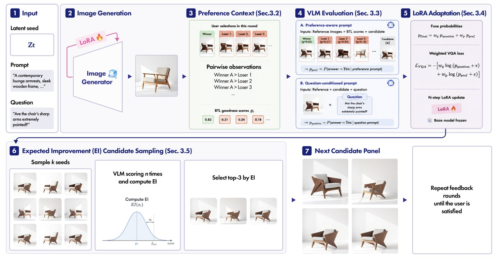
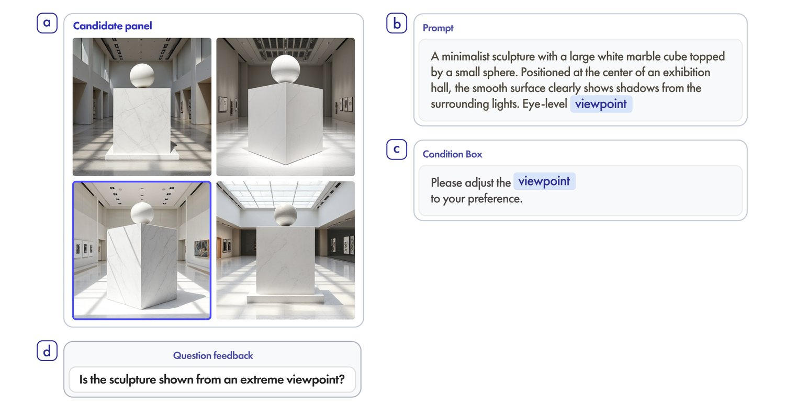
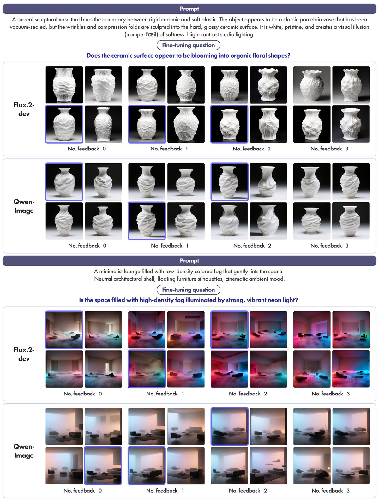

Interactive Fine-Tuning of Text-to-Image Models with Designer-in-the-Loop Feedback
1Department of Interior Architecture Design, Hanyang University 2Human-Centered AI Design Institute, Hanyang University *Corresponding author
Although integration of text-to-image models into the design process requires context-sensitive, personalized control, current tools offer limited support. This misalignment forces prompt–regeneration loops, disrupting design ideation flow and wasting computational resources. However, most low-rank adaptation (LoRA) methods are trained offline with fixed reward signals and do not reflect context-specific preferences. We present DesignLoRA, a designer-in-the-loop method combining VLM-guided gradient distillation with preferential Bayesian optimization. DesignLoRA addresses a limitation of visual question answering-based fine-tuning: its reliance on explicitly stated preferences. By combining preference- and question-conditioned VLM probability signals, it enables rapid fine-tuning aligned with context-specific preferences. A comparative study with 18 designers showed DesignLoRA achieves higher preference alignment with fewer iterations and lower perceived effort. Qualitative evaluation with professional designers revealed advantages in exploratory workflows, where it complements newer AI models by capturing aesthetic preferences beyond explicit prompts. These findings point to a path toward near-real-time personalized control for evolving AI models.

The designer asks a question and selects one image from the current set.
A VLM scores each candidate against the question and the accumulated selection history.
The two VLM losses are combined to update the LoRA while the base generator remains frozen.
Expected Improvement selects the images shown in the next round.


@article{lee2026designlora,
title = {Design {LoRA}: Interactive fine-tuning of text-to-image
models with designer-in-the-loop feedback},
author = {Lee, Seung Won and Yun, Yejin and Hyun, Kyung Hoon},
journal = {Advanced Engineering Informatics},
volume = {76},
pages = {105053},
year = {2026},
month = nov,
issn = {1474-0346},
doi = {10.1016/j.aei.2026.105053},
url = {https://doi.org/10.1016/j.aei.2026.105053},
publisher = {Elsevier BV}
}